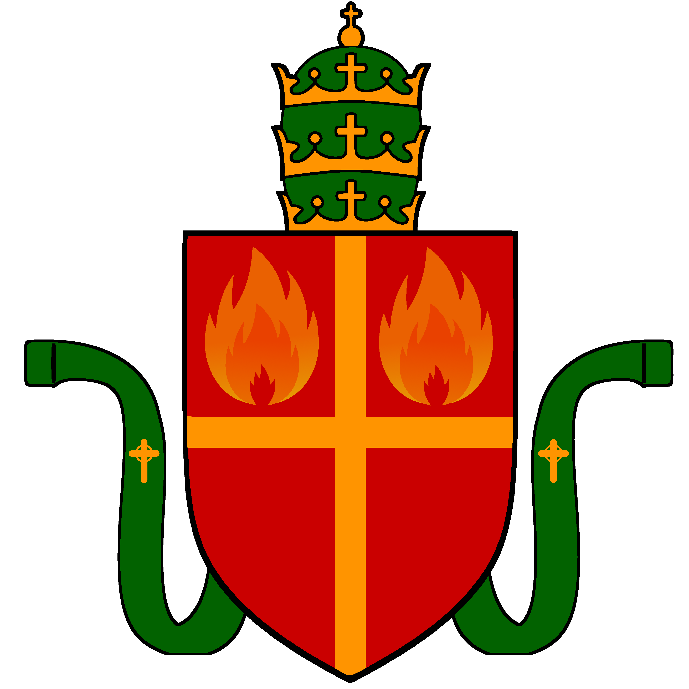

O Świętym Kościele Lewosławia
Święty Kościół Lewosławia jest wspólnotą wiernych i uduchowionych żyjących wedle wartości nadanych przez boskiego opiekuna Naratusa oraz zgodnie z wolą Piątki. Jego misją jest wypełnianie woli bogów, nauczanie ich ścieżek i ochrona wiernych. Święty Kościół Lewosławia jest częścią Uniwersum Multikont. Lewosławie jest narodową religią Multikont.
Organy Centralnego Kościoła
Organy Patriarchatu Lewosławia, serca Kościoła:
Patriarcha Lewosławia
Najwyższy zwierzchnik duchowy i organizacyjny Kościoła, kieruje całością jego działań i czuwa nad czystością doktryny. Jest zwierzchnikiem Państwa-Miasta Narathor.
Alaryk I Szkarłatny
Patriarcha Lewosławia
Rada Pięciu Promieni
Organ doradczy i wspierający Patriarchę, składa się z Wielkiego Archonta oraz pięciu kardynałów promienia.
Hangvul
Wielki Archont
Renthurnak
Prominens Bellator Ignistrigoni – Promień Wojenny Ignistrigona

Imperius
Prominens Sapientiae Velmioris – Promień Mądrości Velmiora

Serenya
Prominens Misericordiae Elyavriae – Promień Miłosierdzia Elyavrii

Althaea
Prominens Visionis Ethelaris – Promień Wizji Ethelary

Stefan
Prominens Ordinis Thalorgaris – Promień Porządku Thalorgara
Kolegium Doktrynalne
Odpowiada za opracowywanie aktów doktrynalnych oraz ich interpretację zgodnie z wolą bogów.

W skład Kolegium wchodzi 12 kronikarzy objawienia
Kuria Patriarsza
Administracja Kościoła Centralnego, w skład której wchodzą Wielka Kancelaria, dykasterie, Archiwum Głosu i Biuro Ewidencji Diusz. Zwierzchnikiem Kurii Patriarszej jest Patriarcha Lewosławia.
Prowadzi politykę wewnętrzną i zagraniczną Patriarchatu Lewosławia i Państwa-Miasta Narathor.
Wykonuje zadania dotyczące nadzoru nad jednością nauki wiary lewosławnej na świecie.
Wykonuje zadania dotyczące nadzoru nad organizacją i funkcjonowaniem lewosławnych zakonów rycerskich.
Wykonuje zadania dotyczące nadzoru nad powołaniami i działalnością egzarchów i archiegzarchów.
Nadzoruje przydziały uduchowionych do siedzib.
Odpowiada za organizację zasad życia wiernych i uduchowionych oraz organizacji rodziny w kulcie lewosławnym.
Odpowiada za opiekę nad kulturą lewosławną, nadzór nad stanem świątyń i innych zabytków kultury lewosławnej oraz za organizację nauki wiary i kultury lewosławnej.
Wykonuje zadania dotyczące nadzoru nad domami profesji kościelnych.
Gromadzi, archiwizuje i publikuje akty doktrynalne i akty prawa religijnego.
Prowadzi spis wiernych i uduchowionych Lewosławia, w szczególności: urodzeń, małżeńst, konwersji, herezji i święceń.
Trybunały Kościoła
Najwyższe organy sądownicze – Trybunał Strażników Lewosławia i Trybunał Boskiej Sprawiedliwości – czuwają nad przestrzeganiem prawa boskiego, sprawują wymiar boskiej sprawiedliwości oraz wydają wyroki w imieniu bogów.
1) środków zaskarżenia od orzeczeń kolegiów strażników Lewosławia;
2) ciężkich zbrodni przeciwko Kościołowi;
3) zbrodni dotyczących układania się z anime-demonami lub innymi wrogami Kościoła;
4) usunięcia sędziego z uwagi na utratę zaufania boskiego.
1) nadzwyczajnych środków zaskarżenia od wyroków kościelnych sądów egzarchalnych;
2) herezji popełnionych przez kapłana;
3) ciężkich zbrodni przeciwko wiernym i uduchowionym;
4) wykorzystania boskich mocy bez błogosławieństwa Kościoła;
5) wykorzystania mocy istot nieuznanych przez Kościół za bogów lewosławnych.
Zakon Szkarłatnych Ostrzy
Zakon Szkarłatnych Ostrzy stanowi zbrojne ramię Patriarchy i Świętego Kościoła Lewosławia. Składa się ze Szkarłatnych Braci i Szkarłatnych Sióstr.
Na czele Zakonu stoi Wielki Mistrz
Organizacja kultu Lewosławnego
Elementy organizacji kultu Lewosławnego:
Stopnie święceń uduchowionych
Uduchowieni przechodzą trzy stopnie święceń:
Płomycznikiem zostaje uduchowiony, który w ustalonym trybie złoży śluby jednemu z bogów Piątki, tym samym obierając go na swojego opiekuna.
Płomycznik może zostać podniesiony do stopnia iskry, jeśli płomycznik ukończył szkolenie i uzyskał stopień profesji w domu profesji kościelnej, oraz wykazał, że jest ekspertem w ścieżce boga, któremu złożył śluby.
Iskra może zostać podniesiony do stopnia promiennika, jeżeli iskra swoją działalnością wykazał, że jest mistrzem w znajomości ścieżek bogów lewosławnych, potrafi mistrzowsko stosować moc swojego boga opiekuna oraz sumiennie wykonywał swoją profesję kościelną.
Stopnie profesji kościelnych
Uduchowieni uzyskują szkolenie w profesji kościelnej w domach profesji kościelnych. Każdy uduchowiony podlega przydziałowi do jednego z domów od dnia uzyskania stopnia płomycznika. Uduchowiony kończąc szkolenia uzyskuje właściwy stopień profesji.
Teolodzy nauczają, studiują i spisują wiedzę na temat teologii i wiary lewosławnej.
Mistrzowie rytuałów przeprowadzają rytuały.
Paladyni służą w zakonach i straży świątynnej, broniąc Kościoła i wiernych.
Uzdrowiciele używają mocy bogów w celu uzdrawiania istot ludzkich.
Administratorzy pełnią funkcje w administracji kościelnej.
Sędziowie sprawują wymiar sprawiedliwości w kościelnych sądach.
Organizacja Kościoła w egzarchatach i metropoliach
Egzarchatem Kościoła jest określone terytorium i wspólnota wiernych i uduchowionych je zamieszkująca. Zwierzchnikiem kultu lewosławnego w egzarchacie jest egzarcha. W egzarchatach o wyjątkowym znaczeniu kulturowym lub strategicznym Patriarcha może w miejsce egzarchy powołać archiegzarchę. Archiegzarcha, prócz funkcji zwierzchnika kultu lewosławnego w egzarchacie (nazywanego archiegzarchatem), może sprawować funkcję przewodniczącego metropolii. Metropolią jest grupa egzarchatów leżących w jednym państwie narodowym lub w inny sposób powiązanych.
Archiegzarchat Kapitolu
Egzarchat Adasy
Egzarchat Zenburnu
Egzarchat Ifralasu
Egzarchat Valatoru
Egzarchat Ererc
Egzarchat Ikorory
Archiegzarchat Tarkwinogrodu
Egzarchat Tarkwinogrodu Zachodniego
Egzarchat Discorda
Egzarchat Facebooka
Egzarchat Storisis
Egzarchat Twittera
Egzarchat Youtuba
Egzarchat Instagrama
Egzarchat Bellrunu
Egzarchat Exidoru
Egzarchat Achendalu
Archiegzarchat Ferrori
Egzarchat Grugakiru
Egzarchat Wrosy
Egzarchat Nubusu
Egzarchat Akaganu
Egzarchat Khirossu
Egzarchat Morvaku
Egzarchat Thangrimu
Egzarchat Vorsku
Archiegzarchat Varthelionu
Egzarchat Esris
Egzarchat Błękitnej Wyspy
Lewosławne zakony rycerskie
Lewosławny zakon rycerski jest zbrojną organizacją służącą Kościołowi i Patriarsze. Patriarcha jest zwierzchnikiem lewosławnych zakonów rycerskich. Aktywne zakony:
Zakon Templariuszy Adanosa
Zakon Templariuszy Adanosa powstał w czasach wiekich odkryć Azurii aby szerzyć Lewosławie w nienznanej krainie na zachodzie. Templariusze Adanosa założyli własne państwo.